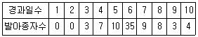

산림산업기사 (2015-03-08 기출문제)
1과목: 조림학
1. 상수리나무 1년생 합격묘를 50,000본 생산하고자 한다. 생산묘의 20%는 불합격묘로서 버리고, 파종상 1m2에 50본을 세우기로 한다. 상면적은 전 시업면적의 60%로 하면 이에 소요되는 전 묘포면적은 얼마인가?
- 1,333m2
- 2,000m2
- 2,083m2
- 2,683m2
(정답률: 59%)

2. 호두나무 및 측백나무 등의 생육에 적절한 토양산도의 범위는?
- pH 4.0 ~ 4.7
- pH 4.8 ∼ 5.5
- pH 5.6 ∼ 6.5
- pH 6.6 ∼ 7.3
(정답률: 49%)
3. 제벌(잡목 솎아베기)에 관한 설명으로 옳은 것은?
- 1회 작업으로 종료되는 것이 원칙이다.
- 제초제나 살목제는 제벌작업에 이용될 수 없다.
- 벌채목을 이용한 중간 수입을 기대하기 어렵다.
- 조림지에 분포하는 자연발생 수목도 제거 대상목이 된다.
(정답률: 77%)
4. 주로 입선법으로 종자를 정선하는 수종은?
- 소나무
- 가래나무
- 가문비나무
- 일본잎갈나무
(정답률: 73%)
5. 다음 중 종자의 결실주기가 가장 긴 수종은?
- 전나무
- 소나무
- 오리나무
- 버드나무
(정답률: 65%)
6. 모수림작업으로 천연갱신이 어려운 수종은?
- 곰솔
- 소나무
- 자작나무
- 일본잎갈나무
(정답률: 60%)
7. 참나무류나 밤나무 같은 대립종자에 주로 사용하며 어린새싹 대목에 접목하는 방법은?
- 유대접
- 분열법
- 취목법
- 분근법
(정답률: 73%)
8. 다음 중 그늘에서 가장 잘 견디는 수종은?
- 층층나무
- 사철나무
- 자작나무
- 버드나무
(정답률: 71%)
9. 가지치기에 대한 설명으로 옳은 것은?
- 11월부터 이듬해 2월 사이에 실시하는 것이 좋다.
- 1차 가지치기는 수고의 20~30% 높이까지 실시한다.
- 지융부에 유해 호르몬이 있기 때문에 지융부 전체를 제거해 준다.
- 1차 간벌 실시 전에 1차 가지치기 작업으로 모든 수목에 대하여 실시한다.
(정답률: 77%)
10. 일제 동령림의 간벌작업에서 밀도만을 다르게 할 때 나타나는 현상이 아닌 것은?
- 지하고는 고밀도일수록 낮다.
- 고밀도일수록 연륜폭은 좁아진다.
- 단목의 평균 간재적은 고밀도일수록 작아진다.
- 상층목의 평균 수고는 임목의 밀도와 상관없이 거의 비슷하다.
(정답률: 69%)
11. 다음 중 삽목을 할 경우 발근이 어려운 수종은?
- 비자나무,주목
- 버드나무,삼나무
- 은행나무,향나무
- 오리나무,소나무
(정답률: 64%)
12. 100개의 종자를 가지고 발아시험 결과 경과일에 따른 발아종자수가 다음과 같을 때 발아세는?

- 35%
- 45%
- 55%
- 65%
(정답률: 66%)
13. 옻나무, 피나무, 주엽나무 등의 종자발아촉진 방법으로 가장 적합한 것은?
- 침수처리
- 노천매장
- 황산처리법
- 파종시기의 변경
(정답률: 73%)
14. 토양 입단구조의 설명으로 옳지 않은 것은?
- 토양공극과 관련이 있다.
- 토양을 단단히 밟아주면 형성이 어렵다.
- 유기질비료 사용이 많을수록 형성이 어렵다.
- 입단구조가 발달하면 보수성과 통기성이 좋아진다.
(정답률: 70%)
15. 종자가 성숙한 후 가장 오랫동안 모수에 붙어 있는 수종은?
- 단풍나무
- 느티나무
- 양버즘나무
- 방크스소나무
(정답률: 81%)
16. 뿌리의 내피에 발달한 카스페이안대(Casparian strip)의 역할에 관한 설명으로 옳은 것은?
- 뿌리털을 통해 흡수한 물의 이동을 효율적으로 차단하는 역할을 한다.
- 뿌리털을 통해 흡수한 물이 지나치게 다량 흡수되는 것을 방지하는 역할을 한다.
- 뿌리털을 통해 흡수한 물에 녹아있는 무기양료를 보아서 보관하는 역할을 한다.
- 뿌리털을 통해 흡수한 물에 녹아있는 무기양료만 통과 시키는 거름종이 역할을 한다.
(정답률: 69%)
17. 육묘시 해가림을 해 주어야 하는 수종만으로 짝지어진 것은?
- Quercus acutissima, Ulmus pumila
- Picea jezoensis, Abies holophylla
- Pinus densiflora, Juglans sinensis
- Pinus thunbergii, Ailanthus altissima
(정답률: 61%)
18. 개벌작업의 장점으로 옳지 않은 것은?
- 작업방법이 간단하다.
- 음수조림에 적합하다.
- 수종을 다른 수종으로 바꾸고자 할 때 가장 쉬운 방법이다.
- 택벌작업에 비해서 높은 수준의 기술을 필요로 하지 않는다.
(정답률: 80%)
19. 식물이 흡수 이용할 수 있는 토양수분운?
- 팽윤수
- 흡습수
- 화합수
- 모관수
(정답률: 90%)
20. 순림에 관한 설명으로 옳은 것은?
- 수령이 동일한 산림을 뜻한다.
- 한 가지 수종으로 구성된 산림을 뜻한다.
- 순림은 병충해, 풍수해 등에 대하여 저항성이 비교적 강하다.
- 음수인 수종은 양수인 수종보다, 천연림은 인공림보다 순림이 쉽게 형성된
(정답률: 84%)
2과목: 산림보호학
21. 수목의 흰가루병에 걸린 환부에 나타난 흰가루와 관련없는 병원체의 기관은?
- 균사
- 담자포자
- 분생포자
- 분생자경
(정답률: 52%)
22. 밤나무 줄기마름병에 대한 설명으로 옳지 않은 것은?
- 질소 과다 시비를 지양한다.
- 천공성 해충의 피해를 받은 경우 잘 발생한다.
- 병원균의 중간기주인 포플러를 같이 심지 않는다.
- 동해나 열해를 받아 수피와 형성층이 손상 입은 경우 잘 발생한다.
(정답률: 73%)
23. 식물선충에 관한 설명 중 옳지 않은 것은?
- 절대활물기생체이다.
- 대부분은 유충에서 성충이 되기까지 4회 탈피한다.
- 기생하는 부위에 따라 내부,외부,반내부기생선충으로 나눌 수 있다.
- 소나무재선충은 매개충의 몸속에서 나온 제2기 유충이 침입기에 해당한다.
(정답률: 59%)
24. 솔입혹파리 및 솔껍직깍지벌레를 방제하기위하여 사용되는 수간 주사용 약제는?
- 헥사지논 입제
- 다이아지논 유제
- 펜토에이트 유제
- 포스마미돈 액제
(정답률: 67%)
25. 소나무좀에 대한 설명으로 옳지 않은 것은?
- 번데기로 월동한다.
- 부화유충은 모갱과 직각으로 유충갱을 만든다.
- 노숙유충은 목질섬유로 둘러싸고 그 속에서 번데기가 된다.
- 15℃ 이상에서 활동하며 구멍을 뚫고 갱도를 만들어 알을 낳는다.
(정답률: 79%)
26. 곤충의 입틀 구조가 찔러서 빨아 먹기에 알맞은 구조로 된 곤충으로 짝지어진 것은?
- 메뚜기,풍뎅이
- 집파리,나비류
- 진딧물,매미류
- 등애류의 성충,나비류
(정답률: 72%)
27. 우리나라에 서식하는 조류들을 먹이습성에 따라 분류할 경우 가장 적은 비율을 차지하는 조류는?
- 동물질 먹이만을 섭식하는 종류
- 식물질 먹이만을 섭식하는 종류
- 식물질이나 동물질 먹이 모두 섭식하는 종류
- 동물질 먹이가 우선이나 식물질 먹이도 섭식하는 종류
(정답률: 61%)
28. 산불에 관한 설명으로 옳지 않은 것은?
- 산불의 피해정도는 여름이 가장 크다.
- 은행나무가 소나무보다 내화력이 강하다.
- 수령이 낮은 임분일수록 산불의 피해를 많이 받는다.
- 일반적으로 활엽수보다 침엽수가 산불에 의한 피해를 심하게 받는다.
(정답률: 77%)
29. 농약의 살포액 조제에 대한 설명으로 옳지 않은 것은?
- 전착제를 넣을 때는 고체 상태로 바로 살포액에 넣는다.
- 석회액과 황산구리액을 만들 때 같은 온도의 물을 사용하도록 한다.
- 살포액을 만드는 물은 알칼리성인 물 또는 부패한 물을 쓰지 않도록 한다.
- 유제의 경우 유제를 작은 용기에 넣고 잘 저어 유백색의 액으로 만든 다음 유액을 소요량의 물에 넣고 잘 저어 살포액을 만든다.
(정답률: 74%)
30. 수목병해충 예방과 구제를 위하여 살충제를 사용하여야 할 것은?
- 잎녹병
- 그을음병
- 잎떨림병
- 흰가루병
(정답률: 60%)
31. 파이토플라스마에 의해 발생하는 병이 아닌 것은?
- 뽕나무 오갈병
- 벚나무 빗자루병
- 대추나무 빗자루병
- 오동나무 빗자루병
(정답률: 75%)
32. 아까시나무 모자이크병의 병원체 판별기주로 가장 적당한 것은?
- 명아주
- 참나무류
- 황벽나무
- 까치밥나무
(정답률: 62%)
33. 볕데기에 의한 수목피해를 예방하는 방법은?
- 해가림,볏짚깔기 또는 흙깔기 등을 하여 지표의 고온화를 완화시킨다.
- 모래 등을 섞어 토질을 개량하거나 배수처리를 하여 토양수분을 감소시킨다.
- 토양의 온도를 낮추기 위한 관수나 해가림, 또는 토양 피복처리를 하는 것이 좋다.
- 고립목의 줄기를 짚으로 둘러주거나 석회유 등을 발라 직사광선을 막아주는 것이 효과적이다.
(정답률: 71%)
34. 포플러 잎녹병의 중간기주는?
- 참취
- 향나무
- 오리나무
- 일본잎갈나무
(정답률: 59%)
35. 청변병의 전반에 관여하는 매개충은?
- 진딧물류
- 매미충류
- 나무좀류
- 깍지벌레류
(정답률: 52%)
36. 만코지제(다이센 엠-45) 50%(비중은 1) 원액 100ml를 0.⑤%로 희석하려고 할 때 필요한 물의 소요량은?
- 50.9ℓ
- 55.5ℓ
- 99.9ℓ
- 100.5ℓ
(정답률: 59%)
37. 다음 중 훈증제로 사용되지 않는 것은?
- 포스핀
- 아세페이트
- 메틸브로마이드
- 알루미늄포스파이드
(정답률: 47%)
38. 향나무 녹병균의 생활사 중에 형성하지 않는 포자형은?
- 녹포자
- 담자포자
- 겨울포자
- 여름포자
(정답률: 55%)
39. 향나무하늘소의 주요 피해 수종이 아닌 것은?
- 편백
- 측백
- 잣나무
- 삼나무
(정답률: 49%)
40. 해충과 가해형태가 옳지 않은 것은?
- 박쥐나방-천공성
- 밤바구미-식엽성
- 솔잎혹파리-충영형성
- 미국흰불나방-식엽성
(정답률: 67%)
3과목: 임업경영학
41. 수고 측정 기구가 아닌 것은?
- 트랜짓(transit)
- 덴드로미터(dendrometer)
- 빌티모아스틱(biltimore stick)
- 아브네이레블(Abney hand level)
(정답률: 65%)
42. 진계생장량에 대한 설명으로 옳은 것은?
- 고사량과 벌채량을 포함한 총 생장량
- 측정 초기의 생존 임목 재적이 측정 말기에 변화한 변화량
- 측정 초기의 생존 임목 재적과 측정 말기의 생존 임목 재적의 차이
- 산림조사기간 동안 측정할 수 있는 크기로 생장한 새로운 임목들의 재적
(정답률: 61%)
43. 감가상각비를 계산하기 위한 기본적 요소가 아닌 것은?
- 취득원가
- 자본이율
- 잔존가치
- 사용년수
(정답률: 65%)
44. 법정림의 법정상태 요건으로 해당하지 않는 것은?
- 법정축적
- 법정벌채량
- 법정임분배치
- 법정영급분배
(정답률: 74%)
45. 임업경영의 성과분석에 대한 계산식으로 옳지 않은 것은?
- 임업소득 = 임업조수익 - 임업경영비
- 임가소득 = 임업소득 + 농업소득 + 기타소득
- 임업경영비 = 임업현금지출 + 미처분임산물재고감소액 + 임업생산자재재고감소액 + 주임목감소액 -감가상각비
- 임업조수익 = 임업현금수입 + 임산물가계소비액 + 미처분임산물증감액 + 임업생산 자재재고증감액 + 임목성장액
(정답률: 60%)
46. 임업의 경제적 특성으로 원목가격 구성요소에서 가장 큰 항목은?
- 지대
- 육림비
- 운반비
- 감가상각비
(정답률: 76%)
47. 임업이율의 특징으로 옳은 것은?
- 대부이율
- 명목이율
- 현실이율
- 단기이율
(정답률: 72%)
48. 유동자본재가 아닌 것은?
- 임도
- 묘목
- 종자
- 비료
(정답률: 78%)
49. 어떤 산림에서 간벌수입 1천만원을 연이율 5%로 20년후의 벌기까지 거치하면 후가는?
- 약 2,650만원
- 약 2,950만원
- 약 3,660만원
- 약 3,960만원
(정답률: 54%)
50. 임업소득률 계산식으로 옳은 것은?
- 임업소득 ÷ 임가소득
- 임업소득 ÷ 임업조수익
- 임업소득 ÷ 농림업 외 소득
- (임업소득 + 농업소득) ÷ 농림업 외 소득
(정답률: 60%)
51. 토지 순수익 최대의 벌기령 시기가 빨라지는 경우로 옳은 것은?
- 이율이 낮을수록
- 조림비가 많을수록
- 관리비가 많을수록
- 간벌수확의 시기가 빠를수록
(정답률: 63%)
52. 지황조사에서 제지에 해당하는 것은?
- 관련 법률에 의거 지정된 임지
- 입목본수 비율이 30% 이상인 임지
- 입목본수 비율이 30% 이하인 임지
- 암석 및 석력지로서 조림이 불가능한 임지
(정답률: 63%)
53. 임지평가기법 중 마이너스( - ) 값이 나올 수 있는 것은?
- 대용법
- 입지법
- 임지기망가법
- 임지매매가법
(정답률: 66%)
54. 장래에 기대되는 수익을 일정한 이율로 할인하여 현재가를 구하는 산림평가 방법은?
- 기망가법
- 비용가법
- 매매가법
- 입목가법
(정답률: 71%)
55. 경영계획을 수립할 때 가장 먼저 구획하는 것은?
- 소반
- 임반
- 작업급
- 경영계획구
(정답률: 76%)
56. 산림 조사시 기재 요령의 설명으로 옿지 않은 것은?
- 수고는 입목수고의 최저를 측정하여 기재한다.
- 임종은 임공림과 천연림으로 구분하여 각각 인과 천으로 줄여 기재한다.
- 임령은 이령림의 경우 그 수령의 범위를 분모고 하고 평균수령(대표분포수령)을 분자로 한다.
- 임상은 침엽수립,활엽수림,침활혼효림,미입목지로 구분하여 각각 침,활,혼,미로 기재한다.
(정답률: 61%)
57. 통나무의 길이가 7m,원구의 단면적이 1.4m2,말구의 단면적이 0.6m2일 때 스말리안(Smalian)식에 의한 이 통나무의 재적은 얼마인가?
- 0.3m3
- 1.2m3
- 7.0m3
- 30m3
(정답률: 67%)
58. 25년생 소나무의 재적이 0.25m3일 때 평균생장량은?
- 0.010m3
- 0.025m3
- 0.100m3
- 0.250m3
(정답률: 52%)
59. 주업적 임업의 설명으로 옳지 않은 것은?
- 기업과 독림가의 임업이 해당된다.
- 주로 연료 및 농용재 생산을 위한 임업형태이다.
- 임업을 주업으로 하는 100ha 이상의 임업형태이다.
- 임업을 독립된 경영조직으로 운영하는 임업형태이다.
(정답률: 65%)
60. 임업경영에서 보속작업의 장점으로 옳지 않은 것은?
- 목재 관련 산업의 발전에 기여 한다
- 지역주민에게 안정된 고용기회를 제공한다.
- 사업량의 변동이 작아 경영관리가 간편하다.
- 평균생장량이 증가하여 경제적 경영이 가능하다.
(정답률: 57%)
4과목: 산림공학
61. 임도의 평면곡선에 대한 설명으로 옳은 것은?
- 배향곡선은 방향이 서로 다른 곡선을 연속시킨 것
- 복심곡선은 반지름이 다른 곡선이 같은 방향으로 연속되는 것
- 완화곡선은 반지름이 작은 원호의 앞뒤에 반대방향 곡선은 넣는 것
- 반향곡선은 직선부에서 곡선부로 연결될 때 외쪽물매와 나비 넓힘이 원활하게 이어지는 것
(정답률: 52%)
62. 비탈 돌쌓기 시공요령으로 옳지 않은 것은?
- 귀돌이나 갓돌은 규격에 맞는 것으로 한다.
- 돌쌓기의 세로줄눈은 파선줄눈을 피하여 쌓는다.
- 높은 돌쌓기는 밑으로 내려옴에 따라 돌쌓기 뒷길이를 증대시킨다.
- 기초를 깊이 파고 단단히 다져야 하며 큰 돌부터 먼저 놓아가면서 차례로 쌓아올린다.
(정답률: 68%)
63. 임목의 조재율에 대한 설명으로 옳지 않은 것은?
- 활엽수는 80 ∼ 90% 정도이다.
- 침엽수는 60 ∼ 90% 정도이다.
- 입목재적과 원목재적과의 비율이다.
- 수종,경급,수형 등에 따라 달라진다.
(정답률: 62%)
64. 임도의 노면이나 노측비탈면의 물을 모아서 배수하기 위하여 설치하는 배수로는?
- 개거
- 암거
- 집수정
- 옆도랑
(정답률: 74%)
65. 산림지대 강수 유출에 관한 설명으로 옳은 것은?
- 기저유출 = 깊은 중간유출 + 표면유출
- 직접유출 = 얕은 중간유출 + 표면유출
- 기저유츌 = 얕은 중간유출 + 지하수유출
- 직접유츌 = 깊은 중간유출 + 지하수유출
(정답률: 60%)
66. 대경재 벌목 방법으로 옳지 않은 것은?
- 쐐기나 지렛대를 이용한다.
- 기계톱에 무리한 힘을 가하지 않는다
- 바버체어(baber chair)가 발생하도록 작업한다.
- 목재 손실을 방지하기 위해 옆면노치자르기를 한다.
(정답률: 73%)
67. 임분 내에서 벌도, 가지치기, 통나무자르기 작업을 실시하여 일정 규격의 원목을 생산하는 방법은?
- 전목생산방법
- 전간생산방법
- 단간생산방법
- 단목생산방법
(정답률: 71%)
68. 줄떼다지기 공법에 대한 설명으로 옳지 않은 것은?
- 주로 흙깍기 비탈 전체에 이용한다.
- 다른 파종녹화공법에 비해 시공비가 많이 소요된다.
- 비탈을 보호 녹화하기 위해 수직높이 20 ∼ 30cm 간격으로 실시한다
- 비탈면 녹화공법으로 자연경관 회복, 침식과 붕괴 방지 효과가 있다.
(정답률: 46%)
69. 유역의 평균 강수량을 산정하기 위해 각 관측점마다 가중인자를 사용하여 계산하는 방법은?
- 동우선법
- Thiessen법
- 자기우량계법
- 보통우량계법
(정답률: 66%)
70. 임목수확작업의 구성요소가 아닌 것은?
- 적재
- 운재
- 집재
- 조재
(정답률: 58%)
71. 최소곡선반지름을 구하는 식 R = L2/4B에서 L은?
- 종단기울기
- 도로의 나비
- 차량의 운행속도
- 반출할 목재의 길이
(정답률: 69%)
72. 노체의 구성으로 하층부터 상층으로 바르게 나열한 것은?
- 노상 - 노반 - 기층 - 표층
- 노반 - 노상 - 기층 - 표층
- 노상 - 노반 - 표층 - 기층
- 노반 - 노상 - 표층 - 기층
(정답률: 71%)
73. 임도의 평면도에 표시하지 않는 것은?
- 구조물
- 곡선제원
- 임시기표
- 사면보호공
(정답률: 53%)
74. 가선집재와 비교하여 트랙터집재의 특징이 아닌 것은?
- 기동성이 높다.
- 작업생산성이 높다.
- 급경사지 작업이 가능하다.
- 산림환경에 대한 피해가 크다
(정답률: 75%)
75. 사방사업법에 의한 사방사업을 구분할 때 성격이 다른 것은?
- 계류보전사업
- 계류복원사업
- 산지복원사업
- 사방댐 설치사업
(정답률: 57%)
76. 아스팔트 포장작업 마무리 및 성토전압에 주로 사용하는 것은?
- 타이이롤러(tire roller)
- 탬핑롤러(tamping roller)
- 진동롤러(vibrating roller)
- 진동 콤팩터(vibrating compactor)
(정답률: 60%)
77. 해안사방 공법 중 사구조성으로 옳지 않은 것은?
- 식수공법
- 파도막이
- 사초심기
- 퇴사울세우기
(정답률: 55%)
78. 도저의 블레이드면의 방향이 진행방향의 중심선에 대하여 20 ~30°의 경사가 진 것은?
- 불도저
- 틸트도저
- 앵글도저
- 스트레이트도저
(정답률: 76%)
79. 땅속흙막이 시공요령으로 옳지 않은 것은?
- 돌쌓기의 기울기는 1 : 0.3으로 한다.
- 구조물은 상류를 향하여 직각으로 축설한다.
- 바닥파기를 충분히 하고 구조물 높이의 1/3 이상이 묻히도록 한다.
- 현지에 산재된 석재를 충분히 활용하고 큰돌은 밑으로 놓아 축설한다.
(정답률: 59%)
80. 비가 내리지 않을 때 계류를 흐르는 물의 대부분이 차지하는 유출은 무엇인가?
- 직접유출
- 중간유출
- 지표면유출
- 지하수유출
(정답률: 63%)
파종상 1m2에 50본을 세우기로 했으므로, 전체적으로는 40,000/50 = 800m2의 묘지가 필요하다.
상면적은 전 시업면적의 60%로 하므로, 전체적으로는 800/0.6 = 1,333.33...m2의 시업면적이 필요하다.
하지만 문제에서는 전 묘포면적을 구하라고 했으므로, 이를 구하기 위해서는 시업면적에 묘포면적 대비율을 곱해주어야 한다.
묘포면적 대비율은 상수리나무의 경우 보통 1:6 정도이므로, 전 묘포면적은 1,333.33... x 6 = 8,000m2이 된다.
따라서, 보기에서 정답은 "2,083m2"이 아니라 "8,000m2"이 되어야 한다.